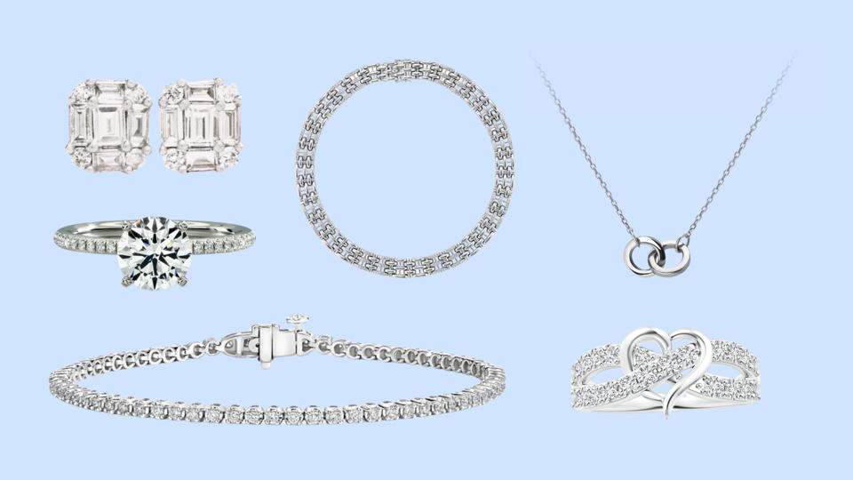
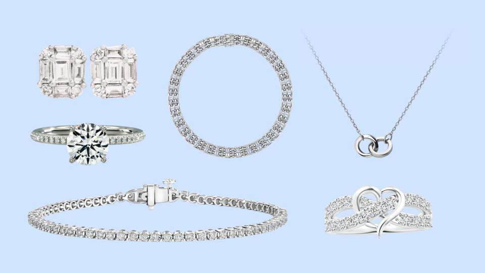
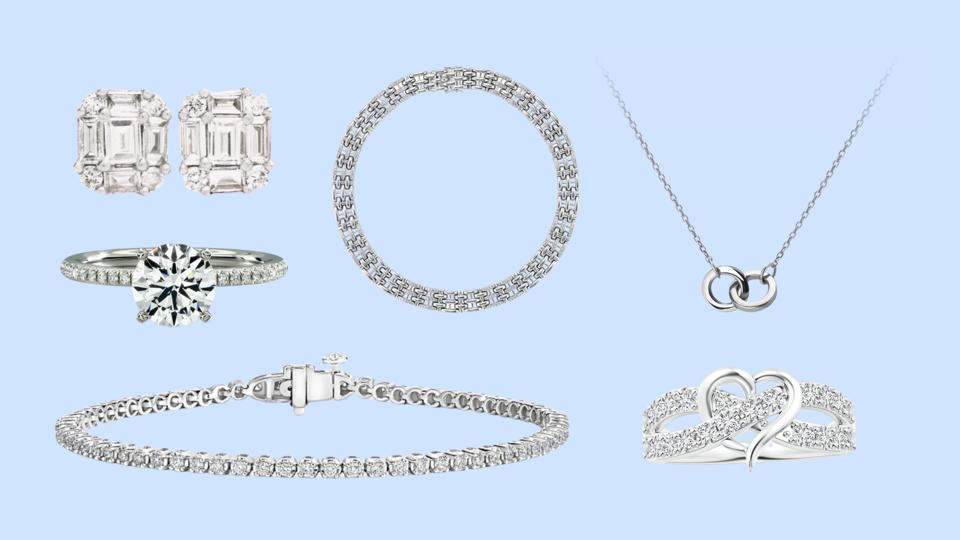
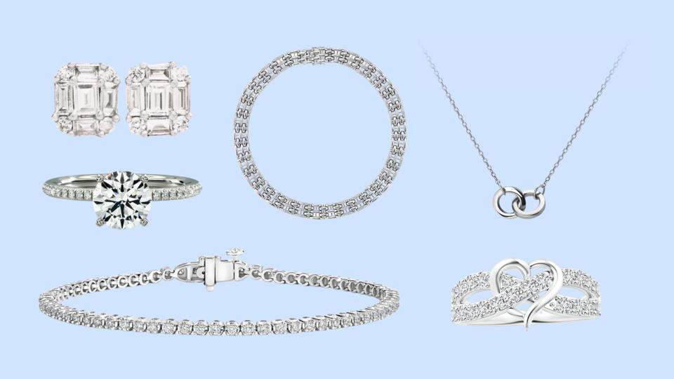

Astra Stones, a premier jewelry store located in the heart of San Roman Village, Corozal, was established in 2020. Specializing in exquisite and timeless pieces, Astra Stones offers a curated collection of fine jewelry, including gold, silver, gemstones, and custom designs. With a commitment to quality craftsmanship and exceptional customer service, Astra Stones has become a trusted destination for those seeking elegance and sophistication. Whether you're looking for a unique gift or a statement piece, Astra Stones brings a touch of luxury to every creation.
Description:
This elegant 14K gold ring is crafted with precision and sophistication, weighing 3 grams. Made from 58.3% pure gold, it combines durability with a luxurious finish, perfect for everyday wear or special occasions. Its timeless design and high-quality craftsmanship make it a versatile and cherished addition to any jewelry collection.

Description:
This stunning sterling silver necklace is crafted from 92.5% pure silver and weighs 50 grams. Its elegant design combines timeless sophistication with durability, making it a versatile piece for both casual and formal occasions. The high-quality craftsmanship ensures a luxurious finish, while the substantial weight adds a sense of premium value. Perfect for gifting or adding to your jewelry collection, this necklace is a classic statement of style and refinement.
Description:
This exquisite green diamond ring features a vibrant gemstone set in a sleek gold chassis. Priced at $500 BZD, it combines elegance and sophistication, making it a perfect statement piece for any occasion. The unique green diamond adds a touch of luxury, while the gold setting enhances its timeless appeal. Ideal for adding a pop of color and style to your jewelry collection.